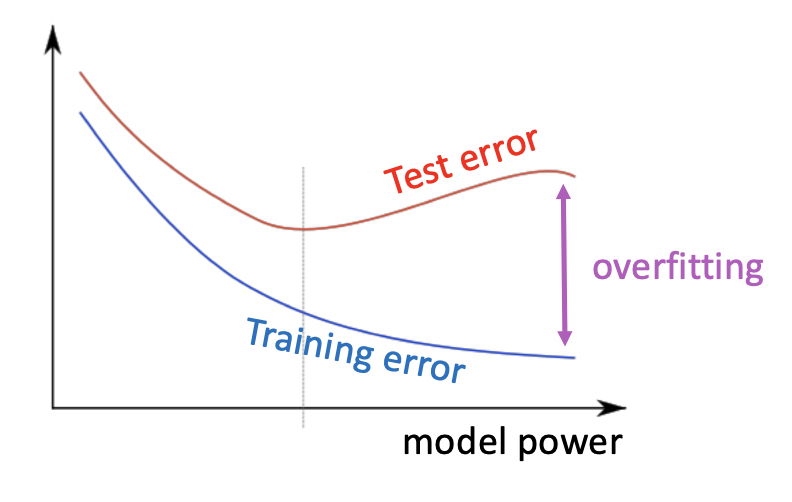
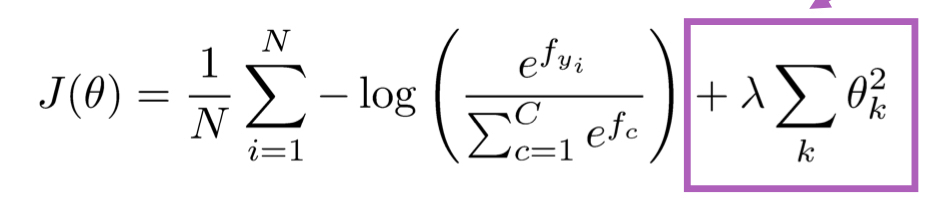

[CS224n]Lecture04-BackPropagation
Lecture 04: Backpropagation and computation graphs
Standford University 의 CS224n 강의를 듣고 정리하는 글입니다.
기본적인 computation graph 와 backpropagation 에 관한 내용은 스킵하도록 하겠습니다. 새롭고, 핵심적인 내용만 간추린 내용입니다.
1. Word Vector를 Retraining?
Quetion: Retraining 에 대한 판단의 시작 예: TV, telly, television 이 pre-trained word vector 에서는 비슷한 공간에 분포되어있다고 가정할 때, training data 에는 TV 와 telly 단어만 존재하고, test data 에 television이 존재 할 때, word vector 는 어떻게 될 것인가?
- Answer: Training data 에 있는 TV 와 telly 에 해당하는 word vector 는 back prop을 진행하면서, 미세하게 업데이트 되며, 같은 방향으로 이동하게 된다. 반면, television에 해당하는 word vector는 weight parameter 업데이트가 일어나지 않으므로, 처음에는 비슷한 공간에 분포 했으나, TV 와 telly 와 멀어지게 된다.
1-1. Word Vector의 Retraining 여부
- Word Vector가 학습 할 때는 매우 큰 데이터셋을 가지고 학습하게 된다. 따라서 매우 다양한 단어들이 Corpus 로 존재한다.
- Fine tuning?: 우리가 가지고 있는 training dataset 이 매우 작다면, 위에서 든 예에서 직감할 수 있듯이, pre trained vector 를 fine tuning 하게 되면, training set 에 fitting 되는 효과가 있고, 우리가 의도치 않는 weight 의 업데이트가 되거나 혹은 되지 않을 수 있다.
2. 효율적인 gradient 계산
- 사실 당연하게 여김에도, 우리가 손으로 계산하는 (upstream network * local gradient) 과정을 아래 식에서도 확인 할 수 있듯이, ds/dh, dh/dz term 은 중복되는 과정이다.
$$\frac{ds}{dW}=\frac{ds}{dh}\frac{dh}{dz}\frac{dz}{dW}$$
$$\frac{ds}{db}=\frac{ds}{dh}\frac{dh}{dz}\frac{dz}{db}$$
- 따라서 효율적인 computation을 구현하기 위해서, back propagation에서 upstream network 를 저장하고, 각 parameter 에 대한 local gradient를 구해, 동시에 곱해주어 back prop 을 진행 할 수 있다.
3. Regularization
우리가 parameter 가 많아지면 많아질 수록, training error 와 test error 는 낮아지기 마련이다. 하지만, 어느 수준을 넘어가게 되면, training set 에 대해서는 매우 정확해지는 반면, test data(validate data)에 대해서는 generalization에서 실패한 그래프나 수치들을 확인할 수 있다. 따라서, 우리는 반드시 우리가 최적화 하려고 하는 Loss 에 대해 Regularization 을 해주어야만 한다.

다음은 L2 Regularization term 이 추가된 loss function 이다. 지겹도록 바왔음에도, 꼭 식을 보면 해석해야겠기에, Model parameter (weight) theta 가 제곱term 으로 너무 커지는 것을 방지하기 위해 lambda 에 비례하여 penalty term 을 추가한다.

4. Vectorization
우리가 forward/backward propagation 을 진행하면서, 각 data의 계산을 looping 하여 계산한다면, 매우 비효율적인 계산 방식이 된다. 우리는 위대한 Vecor/Matrix Multiplication 방법으로, 즉, 모든 data 와 weight을 행렬로 만들어 forward/backward 계산을 진행해야한다. 또한 이렇게 진행했을 때, 가속화 도구인 GPU 활용의 이점을 사용할 수 있다.